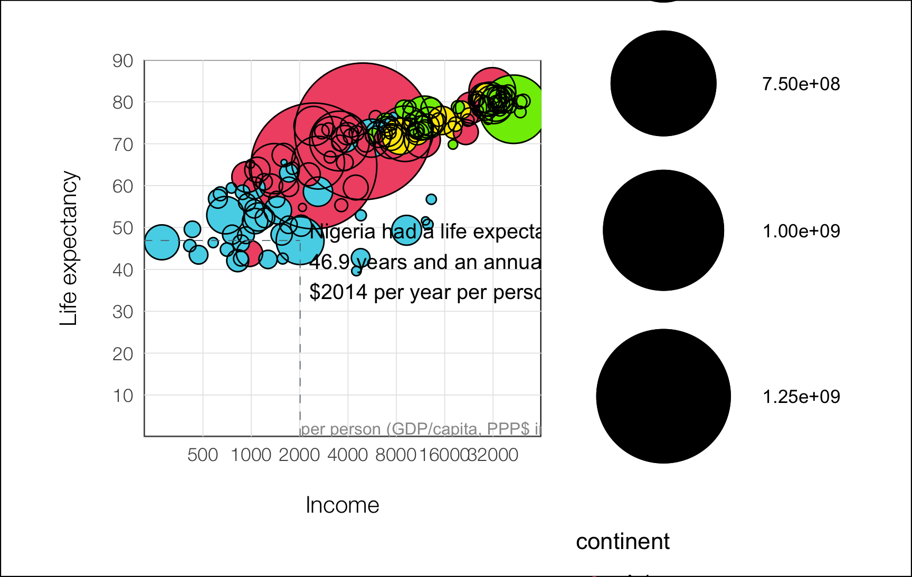

![]()
library(tidyverse)
library(ggpubr)
library(ggprism)
library(patchwork)
library(ggsci)
library(gapminder)
library(here)
library(ggthemes)
library(countrycode)
library(mapproj)Make a nice scatter plot
### subset data
df <- gapminder %>%
filter(year == "2007") %>%
mutate(
pop2 = pop + 1,
continent = case_when(
continent == "Oceania" ~ "Asia",
TRUE ~ as.character(continent)
) %>% as.factor() %>%
fct_relevel("Asia", "Americas", "Europe", "Africa")
)
df
## # A tibble: 142 × 7
## country continent year lifeExp pop gdpPercap pop2
## <fct> <fct> <int> <dbl> <int> <dbl> <dbl>
## 1 Afghanistan Asia 2007 43.8 31889923 975. 31889924
## 2 Albania Europe 2007 76.4 3600523 5937. 3600524
## 3 Algeria Africa 2007 72.3 33333216 6223. 33333217
## 4 Angola Africa 2007 42.7 12420476 4797. 12420477
## 5 Argentina Americas 2007 75.3 40301927 12779. 40301928
## 6 Australia Asia 2007 81.2 20434176 34435. 20434177
## 7 Austria Europe 2007 79.8 8199783 36126. 8199784
## 8 Bahrain Asia 2007 75.6 708573 29796. 708574
## 9 Bangladesh Asia 2007 64.1 150448339 1391. 150448340
## 10 Belgium Europe 2007 79.4 10392226 33693. 10392227
## # ℹ 132 more rowsggplot(data = df, aes(x = gdpPercap, y = lifeExp)) +
geom_point(aes(size = pop, color = continent)) +
geom_point(aes(size = pop2), color = "black", shape = 21) +
scale_x_log10(breaks = c(
500, 1000, 2000, 4000,
8000, 16000, 32000, 64000
)) +
scale_y_continuous(breaks = seq(0, 90, by = 10)) +
scale_color_manual(values = c(
"#F15772", "#7EEB03",
"#FBE700", "#54D5E9"
)) +
scale_size_continuous(range = c(1, 30)) +
# guides(size = FALSE, color = FALSE) +
guides(fill = guide_legend(override.aes = list(size =5))) +
labs(x = "Income", y = "Life expectancy") +
theme_minimal() +
# annotate("text", x = 4000, y = 45, hjust = 0.5,
# size = 85, color = "#999999",
# label = "2007", alpha = .3,
# family = "Helvetica Neue") +
annotate("segment",
x = 0, xend = 2014, y = 46.9, yend = 46.9,
color = "#606F7B", linetype = 2, linewidth = .2
) +
annotate("segment",
x = 2014, xend = 2014, y = 0, yend = 46.9,
color = "#606F7B", linetype = 2, linewidth = .2
) +
annotate("text",
x = 28200, y = 2,
label = "per person (GDP/capita, PPP$ inflation-adjusted)",
size = 2.8, color = "#999999"
) +
annotate("text",
x = 2304, y = 42, hjust = 0,
size = 3.5,
label = paste0(
"Nigeria had a life expectancy of\n",
"46.9 years and an annual income of",
"\n$2014 per year per person in 2007"
)
) +
theme(
panel.background = element_rect(fill = "white"),
plot.background = element_rect(fill = "white"),
plot.margin = unit(rep(1, 4), "cm"),
panel.grid.minor = element_blank(),
panel.grid.major = element_line(
linewidth = 0.2,
color = "#e5e5e5"
),
axis.title.y = element_text(
margin = margin(r = 15),
size = 11,
family = "Helvetica Neue Light"
),
axis.title.x = element_text(
margin = margin(t = 15),
size = 11,
family = "Helvetica Neue Light"
),
axis.text = element_text(family = "Helvetica Neue Light"),
axis.line = element_line(
color = "#999999",
size = 0.2
)
) +
coord_cartesian(ylim = c(4.1, 86))
## Warning: The `size` argument of `element_line()` is deprecated as of ggplot2 3.4.0.
## ℹ Please use the `linewidth` argument instead.
## Warning: Transformation introduced infinite values in continuous x-axis
# ggsave(
# here("blog", "2023", "03", "05", "plot.png")
# )